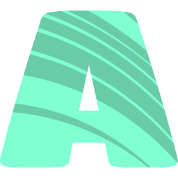
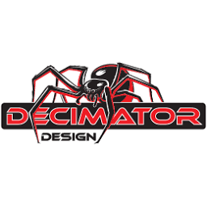
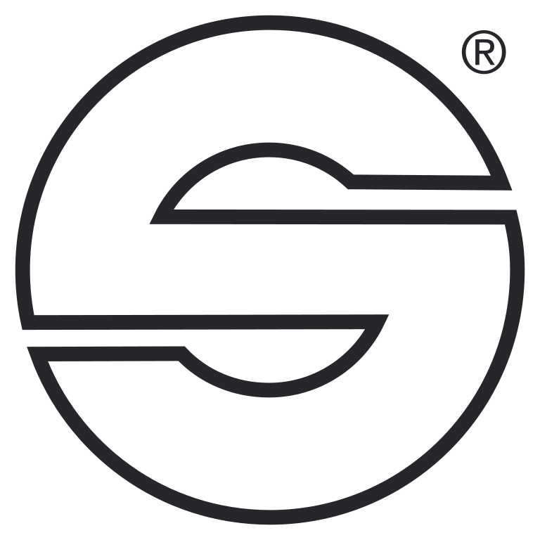

Profile statistics
At a Glance
Professional Work
Dave works across video engineering, camera systems, switching, media servers, LED walls, and live event technology. As a member of IATSE Local 8, he has contributed to corporate events, concerts, sports venues, conventions, and large-scale productions. He runs his own company, Digital Footprints LLC, while pursuing higher-responsibility roles in broadcast, studio operations, and live production — as interested in understanding why something works as in getting it working.
DIY & Technical Interests
Outside event production, Dave has a strong hobbyist streak spanning the electrical, digital, and physical-build worlds. He enjoys building systems that reduce friction, eliminate repetitive work, and make information easier to access and maintain.
Digital Systems & AI Operations
Dave runs his personal life as an engineered system. A Notion-centered personal OS, "System by Dave," serves as the single source of truth, separating capture, triage, and execution into distinct layers: DB | Action Items for unscoped captures, the Active Sites Task Tracker for project work, and a DBX Workspace Database Index that indexes the databases themselves.
On the build side, he writes production-minded code, not throwaway prototypes. Tools like the Slicemo cover-art pipeline follow strict gate discipline — a dry-run before every write, a results log after — and he tracks known gaps with confidence levels rather than pretending work is finished.
The AI Agent Team
| Agent | Role |
|---|---|
| Jerri | Notion triage operator |
| Margo | Parallel triage and Action Items processing |
| Codex | Deterministic bulk and schema execution |
| Claude | Deep architecture and governance writing |
Active Domains
Technical Toolkit
A toolkit that spans professional and personal environments. Dave moves comfortably between software, hardware, and physical infrastructure.
Gear & Brands
A sample of the manufacturers and platforms Dave works across in the field — cameras and lenses, switchers, LED processing, media servers, signal conversion, and camera support.



Approach & Values
A recurring theme across Dave's work is self-sufficiency: whether troubleshooting an LED wall, designing a Home Assistant dashboard, or building an inventory system, he prefers to understand things deeply enough to maintain and improve them himself. He is skeptical of unnecessary complexity and favors solutions that are robust, understandable, and usable in the real world.
A technically curious builder, operator, and problem solver at the intersection of live production, engineering, automation, and hands-on work.
Contact
Open a channel for freelance bookings, union calls, or a build conversation.